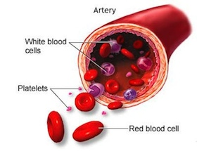

We develop solutions to promote people's health based on the principles and use of alternative medicine. The ultimate goal is to devise personalized prevention strategies.
7527 Buckingham Dr
Room 1E
Saint Louis, MO, 63105
Email: snowcap@gmail.com
Phone: 314 489 2348
Green tea, goqi, ginseng, mum, rose, jasmine …
The modern concepts of personalized medicine or prevention developed from molecular biology, specifically from human genome studies. The old medical systems, for example, Traditional Chinese Medicine, look human body holistically. However, the Chinese medicine treatments are highly individualized. That is because molecules affect function of the human body they reside in. Even slight difference of genes they carry causes people react to environmental factors differently. Consequently, People need different solutions to keep them healthy. Old medical systems observed and coped with reactions caused by the difference of genes. Therefore, there is much to be adopted from alternative medicine.
The current goal of the company is to provide dietary supplements with herbs produced in the US. The development is based on theories and solutions of alternative medicine, and published scientific data. The company is striving to provide simple, safe, effective solutions to help people keep healthy, prevent disease; meanwhile, reduce health care cost.

A platelet cell is a kind of blood cells. Platelet cells are important in maintain blood homeostasis. Low platelet counts may lead to life threatening bleeding. Many conditions may cause platelet counts decrease. Including, chemotherapy or radiation therapy; viral or bacteria infection, especially HIV, HCV, or Helicobacter pylori infection; in-taking too much alcohol; auto-immune disease; as well as drug adverse reactions.
If you concern that your platelet cell counts may drop below normal, or you want to stop their platelet cell counts from further dropping. Please consider Platelets Support.
Platelets Support is made from a patent pending formula.
© 2014 iduna.co